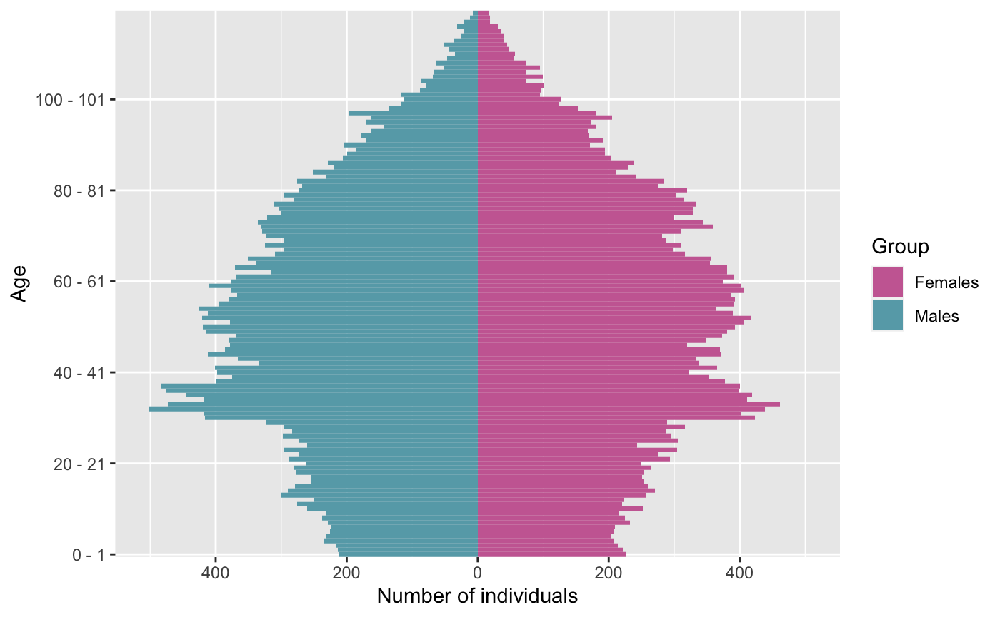

vignettes/IBMPopSim-description.Rmd
IBMPopSim-description.RmdThe IBMPopSim package is conceived to simulate the random evolution of structured population dynamics, called stochastic Individual Based Models (IBMs).
The package allows users to simulate the random evolution of a population in which individuals are characterized by their date of birth, a set of (discrete or continuous) attributes, and their potential date of death.
The population is modified due to different types of events defined by the user, and occurring at random dates. These events include the birth/arrival or death/exit of an individual in the population, an individual changing characteristics. Once the events modifying the population have been defined, the last step before simulating the population evolution is to specify the so-called events intensities, describing the frequency at which the different types of events occur in the population.
A reprendre Once the theory being explained, we proceed to the description of the package. Since the simulation of populations with a large size can be very time consuming, the main algorithm is compiled, using the Rcpp library. Hence, the user needs to write a very little C++ code to describe the events that can occur in the population. We give the detail of how this code has to be written here below.
plan de ce qui suit
Stochastic Individual-Based-Models (IBMs) can be defined as a general class of population dynamics models, where different types of events can occur to individuals at random dates, depending on their characteristics and interactions with others.
The package IBMPopSim allows the efficient simulation of a wide class IBMs where individuals are marked by their age (or equivalently their date of birth) and a set of characteristics (gender, location, size, socioeconomic class…). champs d’application
An IBM can always be summarized by the different types events that can occur to individuals and modify the population composition, and how frequently they happen. Let us start by recalling briefly these features before going into detailed on how they can be defined in IBMPopSim.
In IBMPopSim, the population can evolve according to six main types of events:
With each event type is associated an event kernel, describing how the population is modified following the occurrence of the event. For instance, if an individual I dies or exit a time \(t\), the individual is removed from the population.
For other types of events, the event kernel has to be specified. Indeed, if an new individual enters the population (entry event), the rule for choosing the age and characteristics of this new individual has to be defined.
For instance, the characteristics of a new individual in the population can be chosen uniformly in the space of all characteristics, or can depends on the distribution of his parents or those of the other individuals composing the population.
Once the different types or events and their action have been defined, it remains to define how frequently they can occur to define properly an IBM.
An event intensity a function
\[\begin{equation} \lambda^e(I,t) = f(I,t,\dots) (\#eq:intensity) \end{equation}\]
describing the frequency at which an event \(e\) can occur to an individual I in the population. Informally, given an history of the population \((\mathcal{F}_t)\),
\[\begin{equation} \mathbb{P}(\text{event } e \text{ occurring to I during } ]t,t+dt] | \mathcal{F}_t) = \lambda^e(I,t). \end{equation}\]
The intensity function \(\lambda^e\) can depend on:
When the intensity \(\lambda^e\) does not depends on the other individuals living in the population (there are no interactions for this specific event), the intensity function is said to be in the class of individual intensity functions. This is case for instance when the death intensity of individuals only depend on their age and characteristics.
Otherwise, the intensity function is said to be the class of interaction functions. In this package, we mainly focus on ``quadratic interactions", that is of intensity functions of the form
\[\begin{equation} \lambda^e(I,t) = \sum_{J \in pop} U(I,J,t), (\#eq:interaction) \end{equation}\]
where the interaction function \(U(I,J,t)\) represent the interaction between two individuals \(I\) and \(J\) at time \(t\). See for instance the vignette … for examples of intensities with interactions.
Sometimes, the intensity refers to the frequency at which an event can occur in all the population. This is the case for instance when individuals enter the population at a constant rate \(C^e\) (intensity of class poisson), or at a rate only depending on time \((\Lambda^e_t)\) (intensity of class inhomogeneous_poisson). In this case, the intensity \(\Lambda^e_t\) is informally defined as
\[\begin{equation} \mathbb{P}(\text{event } e \text{ occurring to in the population during } ]t,t+dt] | \mathcal{F}_t) = \Lambda^e_t. \end{equation}\]
Blabla: performance, C++ need motivations. Model compiled.
Que faut-il avoir pour que le package marche, C++
install.packages("IBMPopSim") library(IBMPopSim)
Before going into details on the different steps for defining an IBM in IBMPopSim, let us first go quickly through an example of model creation and simulation.
In order to define a model, the user must specify three building blocks:
The model can then be created from these three blocks.
population_df <- EW_pop_14$sample
params <- list("alpha" = 0.008, "beta" =0.02, "p_male"= 0.51, "birth_rate" = stepfun(c(15,40),c(0,0.05,0)))
death_event <- mk_event_individual(type = "death", intensity_code = " result = alpha*exp(beta*age(I, t));") birth_event <- mk_event_individual( type = "birth", intensity_code = "result=birth_rate(age(I,t));", kernel_code = "newI.male = CUnif(0, 1) < p_male;")
mk_model
model <- mk_model(characteristics = get_characteristics(population_df), events = list(death_event, birth_event), parameters = params)
T bounds on the events intensities have to be specified:a_max <- 115 events_bounds = c( "death" = params$alpha*exp(params$beta*a_max), "birth" = max(params$birth_rate))
Then, the function popsim can be called:
sim_out <- popsim(model, population_df, events_bounds, params, age_max = a_max, time = 30)
## [1] "death" "birth"
## [1] "death" "birth"
## [1] "death" "birth"
## Simulation on [0, 30]pop_out$population contains the information (date of birth, date of death, gender) on individuals who lived in the population over the period \([0,30]\). Functions of the package allows to provide aggregated information on the population.pop_out <- sim_out$population female_pop <- pop_out[pop_out$male==FALSE,] age_pyramid(female_pop, ages = 85:90, time = 30)
## age male value
## 1 85 - 86 FALSE 225
## 2 86 - 87 FALSE 251
## 3 87 - 88 FALSE 229
## 4 88 - 89 FALSE 204
## 5 89 - 90 FALSE 179Dxt <- death_table(female_pop, ages = 85:90,times = 20:30) Ext <- exposure_table(female_pop, ages = 85:90,times = 20:30)
The first step to define a model in IBMPopSim is to define the population structure.
A population is a dataframe in which each row corresponds to an individual, and which has at least two columns:
birth containing the birth dates of individuals in the population.death containing the birth dates of individuals in the population ( NA for alive individuals).The dataframe can contain more than two columns if individuals are described by additional characteristics such as gender, size, spatial location…
head(population_df)
## birth death male
## 1 -106.9055 NA FALSE
## 2 -106.8303 NA FALSE
## 3 -104.5097 NA TRUE
## 4 -104.2218 NA FALSE
## 5 -103.5225 NA FALSE
## 6 -103.3644 NA FALSEIn the example above, individuals are described by their birth and death dates, as well a Boolean characteristics called male. For instance, the first individual is a female whose age at \(t_0=0\) is \(t_0 - (-106.9055) = 106.9055\).
We draw the attention to the fact that some characteristics names are forbidden, or are reserved to specific cases. The reserved words include:
male: can only be used for a Boolean characteristics, usually referring to the individuals’ sex/gender.id: can only be used in order to defined the individuals unique identifier (see Section @ref(simulationswap)).time : forbidden as characteristics or variable name.char is a reserved word. See here for a comprehensive list of C++ reserved words.Attention: I, J, pop, newI, t, k
During the model creation, a population of individuals is created from the initial population dataframe. The C++ class individual contains several useful functions, whose context of use is detailed in the following. For instance,
age(I,t) returns the age of an individual I at time t.newI.set_age(a,t) sets the birth date \(t-a\) of a new individual called newI, of age a at time t.If Chi is the name of a characteristic, then I.Chi returns the value of the characteristic Chi for the individual I. For instance, in the previous example I.male would equal to TRUE if I is a male of FALSE if I is a female.
A list of model parameters can be defined to simplify the events creation. These parameters can be of various types, summarized in the following table:
| Types of parameters | Parameters |
|---|---|
R objects |
Numeric, logical, character |
Armadillo objects |
Vector (arma::vec), matrix (numeric) (arma::mat) |
| List of IBMPopSim functions |
gompertz, stepfun, piecewise_x, piecewise_xy, weibull
|
For example,
creates a numeric parameter coeff and a Gompertz function death_function which can be used when creating the events of the model.
IBMPopSim functions are classes of functions predefined in the package to simplify models creation. For instance, gompertz(a,b) returns the function \(g(x) = a \exp(bx)\) and stepfun is the usual R function for the creation of step functions. Another example is piecewise_xy which allow the creation of age and time functions. See Section @ref(IBMfunctions) for a description of all IBM functions, and Section @ref(armadillo) for more details of Armadillo objects.
The last and most important step of the model creation is the events creation. The call to the function creating an event is of form,
mk_event_CLASS(type = "TYPE", name ="NAME", kernel_code = "KERNEL_CODE", ...)
where CLASS is replaced by the class of the event intensity, type is the event type and kernel_code the event kernel.
The other arguments depend on the intensity class. Tables @ref(tab:evtype) and @ref(tab:evclass) summarize the different intensity classes and types of events introduced in Section @ref(eventsTh).
| Event type | Type |
|---|---|
| Birth | birth |
| Entry | entry |
| Death | death |
| Exit | exit |
| Swap | swap |
| Custom | custom |
| Intensity class | Class |
|---|---|
| Poisson | poisson |
| Inhomogeneous Poisson | inohomogeneous_poisson |
| Individual | individual |
| Interaction | interaction |
The intensity function and kernel of an event are defined through arguments of the function mk_event_CLASS. These arguments are strings composed of few lines of code defining an event frequency and its action of the event on individuals. Since the model is compiled using Rcpp, the code should be written in C++. However, thanks to the model parameters and functions/variables of the package, even the non-experienced C++ user can define a model quite easily. Several examples are given in the several vignettes of this package, and basic C++ tools are presented in Section @ref(essentials).
The optional argument name gives a name to the event. If not specified, the name of the event is its type, for instance death. However, a name must be specified if the model is composed of several events with the same name.
The argument kernel_code is NULL by default and doesn’t have to be specified for death and exit events. For those types of events, the event kernel is automatically generated during the model creation. For instance, if the user defines a death event, the C++ code generated is
pop.kill(k, t);
which removes the individual number k from the population pop if he dies. No kernel has to be specified by the user.
If an exit events is defined, a characteristic out is automatically added to individuals in the population. When an individual I exit the population,I.out is set TRUE and his exit time is recorded as a “death” date.
For a birth event, the default generated event kernel is that an individual I gives birth to a new individual newI of age 0 at the current time t, which has the same characteristics than his parent I. If no kernel is specified, the default generated C++ code for a birth event is:
individual newI = I;
newI.birth_date = t;
pop.add(newI); The user can modify the birth kernel, by specify the argument `kernel_code of mk_event_CLASS. In this case, the generated code is
individual newI = I;
newI.birth_date = t;
_KERNEL_CODE_
pop.add(newI);where _KERNEL_CODE_ is replaced by the content of the kernel_code argument. For instance, in a population where individuals are characterized by their gender, the kernel code
birth_kernel_code <- "newI.male = (CUnif(0, 1) < p_male);"
creates new individuals which are males with probability p_male, or females otherwise. Here, p_male should be included in the parameters of the model.
When an entry events occurs the individual entering the population is not of age \(0\). In this case, the user must specify the kernel_code argument indicating how the age and characteristics of the new individual are chosen. For instance, with
entry_kernel_code <- "double a = CUnif(20,40); newI.set_age(a,t); newI.male = (CUnif(0, 1) < p_male); newI.immigrant =TRUE;"
individuals who enter the population have age a taken uniformly in \([20,40]\). In this example, the characteristic immigrant has been added to the population to distinguish individuals who entered the population from individuals “born in the population”.
The available variables for the birth and entry events C++ kernel codes are:
| Variable | Description |
|---|---|
I |
Current individual |
t |
Current time |
pop |
Current population (vector) |
newI |
New individual. By default newI = I with newI.birth = t
|
| Model parameters | Depends on the model |
Finally, the C++ kernel code for a swap event is only specified by the kernel_code argument of mk_event_CLASS which must specify how the new characteristics of the individual are chosen. The kernel code can depend on the following variables:
| Variable | Description |
|---|---|
I |
Current individual |
t |
Current time |
pop |
Current population (vector) |
| Model parameters | Depends on the model |
We can now describe the different intensity classes.
As explained in @ref(Eventintensityth), events with intensities in the class individual are intensity functions which depend only the individual age and characteristics and on time.
They are created using the function
mk_event_individual(type = "TYPE", name ="name"
intensity_code = "INTENSITY",
kernel_code = "KERNEL_CODE"),The intensity_code argument contains few lines C++ code describing the intensity function. The available variables for the intensity code are given in Table @ref(tab:varInd) :
| Variable | Description |
|---|---|
I |
Current individual |
t |
Current time |
| Model parameters | Depends on the model |
The intensity value has to be stored in a variable called result. For instance, the intensity code
death_intensity<- " if (I.male) result = alpha_1*exp(beta_1*age(I, t)); else result = alpha_2*exp(beta_2*age(I,t));"
corresponds to a death intensity equal to \(d_1(a) = \alpha_1 \exp(\beta_1 a)\) for males and \(d_2(a) = \alpha_2 \exp(\beta_2 a)\) for females. In this case, the intensity function depends on the individuals’ age, gender, and on the model parameters \(\alpha = (\alpha_1, \alpha_2)\) and \(\beta = (\beta_1, \beta_2)\).
The code
time_dep_function <- piecewise_xy(c(5), list(gompertz(0.1,0.005), gompertz(0.08,0.005))) time_dep_function(0,65) # death intensity at time 0 and age 65.
## [1] 0.1384031params <- list("death_function"= time_dep_function) time_dep_intensity<- "result=death_function(t,age(I,t));"
creates a death intensity depending on a age and time, equal to
\[\begin{equation*} d(t,a) = 0.1\exp(0.005a) 1_{\{0\leq t <5\}} + 0.08\exp(0.005a) 1_{\{5\leq t\}} \end{equation*}\]
Events with intensities in the class interaction are events which occur to an individual at a frequency which is the result of interactions with other members of the population (see @ref(Eventintensityth)), and which can be written as
\[\begin{equation*} \lambda^e(I,t) = \sum_{J \in pop} U(I,J,t), (\#eq:interaction) \end{equation*}\]
where \(U(I,J,t)\) is the intensity of the interaction between individual \(I\) and \(J\).
An event with intensity in the class interaction is created by calling the function
mk_event_interaction(type = "TYPE",
interaction_code = "INTERACTION_CODE",
interaction_type="random",
kernel_code = "KERNEL_CODE").The intensity_code argument contains few lines of C++ code describing the interaction function \(U\). The available variables for the intensity code are:
| Variable | Description |
|---|---|
I |
Current individual |
J |
Another individual in the population |
t |
Current time |
| Model parameters | Depends on the model |
Here is example of interaction code:
death_interaction_code<- " result = max(J.size -I.size,0);"
In the example above, the death intensity of an individual I is the result of competition between individuals, depending on a characteristic named size. If I meets randomly an individual J of size bigger than I.size, he can die at the intensity J.size-I.size. The bigger is I.size, the lower is the death intensity of individual I.
The argument interaction_type, set by default at random, is an algorithm choice for simulating the model.
When interaction_type=full, the intensity of an individual is computed making the sum over all the individuals in the population of the interactions with the given individual. In IBMPopSim, we introduced a “randomized” algorithm, in which the intensity of an individual is computed by picking randomly another individual in the population and computing its interaction function with the given individual. In most cases, the random algorithm is much faster than the full algorithm.
Note that events with individual intensities are also much faster to simulate since they only require to observe one individual to be computed.
When a event occur in the population with an intensity which does not depend on the population, the event intensity is of (inhomogeneous) Poisson class. When the event intensity is simply a constant, the class is called Poisson in reference to Poisson processes intensities. Such events are created with the function
mk_event_poisson(type="TYPE",
intensity="CONSTANT",
kernel_code = "KERNEL_CODE")If the parameters lambda has been defined in the list of model parameters, then
mk_event_poisson(type = "entry", intensity = "lambda", kernel_code ="double a_I= CNorm(20,2); newI.set_age(a_I,t);")
creates an event of type Entry, where individuals enter the population at a constant intensity lambda. When an individual newI enters the population at time t, his age is chosen as a normally distributed random variable, with mean 20 and variance 4, using the function CNorm() ( see doc ). When the intensity depends on time (but not on the population), the event can be created similarly by using the function
mk_event_inhomogeneous_poisson(type= "TYPE",
intensity_code = "INTENSITY",
kernel_code = "KERNEL_CODE")For instance,
mk_event_inhomogeneous_poisson(type = "entry", intensity = "result = lambda*cos(t);", kernel_code =" double a_I= CNorm(20,2); newI.set_age(a_I,t);")
creates the same event than before, but now individuals enter the population at the rate \(\lambda \cos(t)\) depending on the current time t.
Finally, the IBM model is created using the function mk_model. The model is composed of:
get_characteristics,model <- mk_model(characteristics = get_characteristics(population_df), event = events_list, parameters = model_params)
During this step which can take a few seconds, the model is created and compiled using the Rcpp package. One of the advantages of the model structure in IBMPopSim is that only the model only depends on the population characteristics’ and parameters names and types, rather than their values.
This means that once the model has been created, various simulations can be done with various initial populations and different parameters values. Thus, only one model has to be created to simulation a class of IBMs with varying parameters (see Section @ref(Simulation1) for an example).
Here is an example of model with a gender characteristic and two events (birth and death):
params <- list("p_male"= 0.51, "birth_rate" = stepfun(c(15,40),c(0,0.05,0)),"death_rate"=gompertz(0.008,0.02)) death_event <- mk_event_individual(type = "death", name= "my_death_event", intensity_code = "result = death_rate(age(I,t));") birth_event <- mk_event_individual( type = "birth", intensity_code = " if (I.male) result = 0; else result=birth_rate(age(I,t));", kernel_code = "newI.male = CUnif(0, 1) < p_male;") model <- mk_model(characteristics = get_characteristics(population_df), events = list(death_event,birth_event), parameters = params) summary(model)
## Events:
## #1: individual event of type death
## #2: individual event of type birth
## ---------------------------------------
## Individual description:
## names: birth death male
## R types: double double logical
## C types: double double bool
## ---------------------------------------
## R parameters available in C++ code:
## names: p_male birth_rate death_rate
## R types: double closure closure
## C types: double function_x function_xOnce the model has been created, the random evolution of the population can be simulated over a period of time \([0,T]\) by calling the function
popsim(model,population, events_bounds, parameters,age_max,time,...)Where:
model is the model created in the previous step,population is a population dataframe representing the initial population,parameters is the list of parameters value,age_max is the maximum age of individuals in the population (set by default to Inf),time is the final simulation time \(T\) or a vector of times (see @ref(simulation_swap)),events_bounds is a named vector of bounds for the intensity or interaction function of each event.The IBM simulation algorithm is based on an acceptance-rejection method for simulating random times, called thinning (donner ref). The main idea of the algorithm is to simulate candidate event times with constant intensity \(\bar \lambda\) (which is simply an exponential variable with parameter \(\lambda\)), which dominates the true event intensity \(\lambda^e(I,t)\) for all individuals \(I\):
\[\begin{equation} \lambda^e(I,t) \leq \bar{\lambda}, \quad \forall I \in \text{pop}, \; t \in [0,T]. \end{equation}\]
Starting from time \(t\), once a candidate event time \(t + \tau^e\) has been proposed for a given event \(e\) and individual \(I\), it remains to accept or reject the candidate event with probability \(\frac{\lambda^e(I,t+\tau^e)}{\bar{\lambda}}\). If the candidate event is accepted, then the event \(e\) occurs to the individual \(I\) at time \(t + \tau^e\). The thinning algorithm can be summarized as follow:
Thinning algorithm
If the intensity is of class interaction, the intensity function \(\lambda^e\) is replaced by the interaction function \(U^e\), and \(\bar \lambda\) by a bound \(\bar U^e\) of \(U^e\).
Thus, before simulating a random path of the population evolution, the user has to specify bounds for the intensity function (resp. interaction kernel) of each event. Let us consider the model with a birth and death built in the previous section.
In the model, the birth intensity of an individual of age \(a\) is \(0\) if he is a male, and \[ b(a) = 0.005 \mathbb{1}_{[15,40]},\] if the individual is a female. Thus, the intensity bound for birth events is
\[\bar\lambda_b = \sup_{a\geq 0} \; \text{birth\_rate}(a) = 0.05\]
Since the death intensity function is not bounded, the user will have to specify a maximum age \(a_{max}\) in popsim. Then, the bound for death events is
\[ \bar \lambda_d = 0.008\exp(0.02 a_{max}).\]
The events bounds are defined as a named R vector, with components names corresponding to the events names.
In our example, the event of type death has been named "my_death_event". No name has been specified for the event of type birth which thus has the default name "birth". Then,
a_max <- 120 # maximum age events_bounds <- c("my_death_event" = 0.008*exp(0.02*a_max), "birth" = max(params$birth_rate)) events_bounds
## my_death_event birth
## 0.08818541 0.05000000Utilisation de max, renvoyer à la section C++.
Once the model and events bounds have been defined, a random trajectory of the population can be simulated by calling
sim_out <- popsim(model, population_df, events_bounds, params, age_max = a_max, time = 30)
## [1] "my_death_event" "birth"
## [1] "my_death_event" "birth"
## [1] "my_death_event" "birth"
## Simulation on [0, 30]#str(sim_out)
sim_out is a list composed of
arguments of the simulation inputs, including the initial population, parameters and event bounds.logs of variables related to the simulation algorithm.population.When there are no swap events (individuals don’t change of characteristics), the evolution of the population over the period \([0,30]\) is recorded in a single dataframe sim_out$population containing the information of all individuals who lived in the population during the period.
Each line of sim_out$population contains the information of an individual who lived in the population over the period \([0,30]\). This includes individuals who were initially in population_df, as well as individuals who were born or entered the population.
str(sim_out$population)
## 'data.frame': 118008 obs. of 3 variables:
## $ birth: num -90 -89.9 -89.9 -89.9 -89.9 ...
## $ death: num NA NA NA NA NA NA NA NA NA NA ...
## $ male : logi FALSE FALSE TRUE FALSE FALSE FALSE ...Table @ref(tab:logs) describes the elements of the vector sim_out$logscontaining information on simulation algorithm:
| Elements | Description |
|---|---|
proposed_events |
Number of candidate event times proposed during the simulation |
effective_events |
Number of events which occured during the simulation |
cleanall_counter |
Number of population cleans |
duration_main_algorithm |
Simulation time |
For instance, the acceptance rate in the toy model is
sim_out$logs['effective_events']/sim_out$logs['proposed_events']
## effective_events
## 0.2178528and the simulation time is
sim_out$logs['duration_main_algorithm']
## duration_main_algorithm
## 0.054597Parameters modification and event removal
As explained in Section @ref(Modelcreation) the structure of the compiled model allows the parameters’ values to be changed without recompiling the model. For instance, the parameter of the Gompertz death function can be modified to study the impact of an increase in mortality.
Before running the simulation, the events bounds should be updated accordingly accordingly.
params$death_rate <- gompertz(0.01,0.02) events_bounds["my_death_event"] <- 0.01*exp(0.02*a_max) # Death event bound update new_sim_out <- popsim(model, population_df, events_bounds, params, age_max = a_max, time = 30) # Population simulation
An event can also be remove by setting the event bound to 0:
sim_out_no_birth <- popsim(model, population_df, events_bounds = c("birth"=0, "my_death_event"= 0.01*exp(0.02*a_max)), params, age_max = a_max, time = 30) # Simulation without birth events
## [1] "my_death_event" "birth"
## [1] "birth" "my_death_event"
## [1] "my_death_event" "birth"
## [1] "event birth is deactivated"
## Simulation on [0, 30]Outputs
The R dataframe format for the output of the simulation allows all data manipulation functionalities of tidyverse or data.table packages to be used for analyzing the population. IBMPopSim also provides base functions to study the simulation outputs.
For instance, the population age pyramid can computed at a give time (resp. at multiple dates) with the function age_pyramid (resp. age_pyramids). We refer to the other vignettes for more details on age pyramids computation and visualization.
pop_out <- sim_out$population # Population age-pyramid at time 30: pyr <- age_pyramid(pop_out, ages = 0:a_max, time = 30) plot_pyramid(pyr)

Mortality tables with compatibles with packages such as StMoMo can also be computed by with the functions death_table and exposure_table.
female_pop <- pop_out[pop_out$male==FALSE, ] Dxt <- death_table(female_pop, ages = 85:90,times = 20:30) # Death table (death age is age at death) Ext <- exposure_table(female_pop, ages = 85:90,times = 20:30) # Exact computation of central Exposure-to-risk
Simple multithreading
If there are no interactions between individuals, i.e. if there are no events with intensity of class interaction, then the simulation can be parallelized easily by setting the optional parameter multithreading (FALSE by default) to TRUE:
sim_out <- popsim(model, population_df, events_bounds, params, age_max = a_max, time = 30, multithreading = TRUE)
## duration_main_algorithm
## 0.021818By default, the number of threads is the number of concurrent threads supported by the available hardware implementation.
The number of thread can be set manually with the optional argument num_threads of popsim.
When there are swap events (individuals can change of characteristics), the dates of swap events and the individual changed characteristics following each swap event should be recorded for each individual in the population, which is a memory intensive and computationally costly process.
To maintain efficient simulations in the presence of swap events, we propose the following solution:
time of popsim. Then popsim returns in the object population a list of \(n\) population dataframes representing the population at time \(t_1,\dots t_n\), simulated from the initial time \(t_0\).In the following toy model, a population 100 thousand individuals (or particles) is generated, all born at time 0 and divided into two subgroups. Individuals can swap from subgroup 1 (resp. 2) to subgroup 2 (resp. 1) at rate 0.1 (resp. 0.3).
population_df <- data.frame("birth"= rep(0,1e5),"death"=rep(NA,1e5), "sub_grp" = sample(1:2, 1e5, replace = TRUE)) rates <- list( k12 = 0.1, k21=0.3) #Only swap events occur in the population swap_event <- mk_event_individual( type = "swap", intensity_code = "if (I.sub_grp==1) result= k12 ; else result= k21;", kernel_code = "I.sub_grp = 3 - I.sub_grp;") model_swap <- mk_model(characteristics =get_characteristics(population_df), events = list(swap_event),parameters = rates)
Then, the population is simulated from \(t_0=0\) to \(t_n =20\), and popsim returns a list of 20 dataframes composed of the population at times \(t=1\dots 20\).
time_vec <- 1:20 sim_out <-popsim(model = model_swap, population = population_df, events_bounds = c("swap"=max(unlist(rates))), parameters = rates, time = c(0,time_vec), multithreading = TRUE)
The model is an ergodic two states continuous time Markov chain with stationary distribution \((p_1,p_2)=(0,75,0.25)\). The figure below illustrates the convergence of the probability to be in subgroup 1 to \(p_1\)
pop_size <- nrow(population_df) # Mean number of individuals in subgroup 1 at each time: p_1_t <- lapply(sim_out$population, function(pop_df){ return(nrow(subset(pop_df, sub_grp==1))/pop_size) })
Evolution of probability to be in subgroup 1
This example shows that any continuous time Markov Chain with finite state space can be simulated in a few steps with IBMPopSim.
with_id during the model creation step.It is possible to isolate the individuals’ life course, by setting the optional argument with_id of mk_model to TRUE. In this case, a new characteristic called id is added to the population (if not already defined), identifying each individual with a unique integer.
model_swap_id <- mk_model(characteristics = get_characteristics(population_df), events = list(swap_event), parameters = rates, with_id = TRUE)
## [1] "add 'id' as individual attributes"sim_out_id <-popsim(model = model_swap_id, population = population_df, parameters = rates, events_bounds = c("swap"=0.3), time = seq(0,5, by=1), multithreading = TRUE)
## [1] "swap"
## [1] "swap"
## [1] "swap"
## [1] "Add 'id' attributes to the population."
## Simulation on [0, 1] [1, 2] [2, 3] [3, 4] [4, 5]head(sim_out_id$population[[1]])
## id birth death sub_grp
## 1 1 0 NA 1
## 2 5 0 NA 1
## 3 9 0 NA 1
## 4 13 0 NA 1
## 5 17 0 NA 1
## 6 21 0 NA 1These dataframes can be merged into a single dataframe summarizing the life course of each individual, by calling the function merge_pop_withid.
pop_list <- sim_out_id$population pop_merge <- merge_pop_withid(pop_list) head(pop_merge)
## id birth death sub_grp_1 sub_grp_2 sub_grp_3 sub_grp_4 sub_grp_5
## 1 1 0 NA 1 1 1 1 1
## 2 5 0 NA 1 1 1 1 1
## 3 9 0 NA 1 1 1 1 1
## 4 13 0 NA 1 1 1 1 1
## 5 17 0 NA 1 2 2 1 1
## 6 21 0 NA 1 1 1 1 1For instance, a transition from subgroup 1 to subgroup 2 is observed for the individual with id number 5, between time 2 and 3.
The arguments intensity_code and kernel_code of the mk_event_CLASS functions must contain some C++ code given by the user. In this section we give the essential tools to write this little code.
//.int myNum = 5; // Integer (whole number without decimals)
double myFloatNum = 5.99; // Floating point number (with decimals)
char myLetter = 'D'; // Character
string myText = "Hello"; // String (text)
bool myBoolean = true; // Boolean (true or false)bool data type can take the values true (1) or false (0).a < b
a <= b
a > b
a >= b
a == b
a != b
if, else if, else statements to specify a block of C++ code to be executed if one or more conditions are or not true.if (condition1) {
// block of code to be executed if condition1 is true
} else if (condition2) {
// block of code to be executed if the condition1 is false and condition2 is true
} else {
// block of code to be executed if the condition1 is false and condition2 is false
}for loop.for (statement 1; statement 2; statement 3) {
// code block to be executed
}
//example
for (int i = 0; i < 5; i++) {
cout << i << "\n";
}while (condition) {
// code block to be executed
}The most popular functions of the <cmath> library, which is included in the package, are listed in the table below. If the user wants to call some other functions of cmath not listed in the table, this is possible by adding the prefix std:: to the name of the function.
| Function name | Function call | Meaning |
|---|---|---|
| max | max(a,b) | \(\max(a,b)\) |
| min | min(a,b) | \(\min(a,b)\) |
| log | log(x) | \(\log(x)=ln(x)\) |
| exp | exp(x) | \(e^x\) |
| sin | sin(x) | \(\sin(x)\) |
| cos | cos(x) | \(\cos(x)\) |
| pow | pow(x,a) | \(x^a\) |
| sqrt | sqrt(x) | \(\sqrt(x)\) |
| abs | abs(x) | \(|x|\) |
| ceil | ceil(x) | \(\lceil x \rceil\) |
| floor | floor(x) | \(\lfloor x \rfloor\) |
We use the following notations to describe the available C++ random distributions.
In the table below we show how to call them, which means how to make independent realizations of these random variables, and we give the reference to the C++ corresponding function of the <random> library hidden in this call.
| Function name | Function call | Meaning |
<random> original function |
|---|---|---|---|
| CUnif | CUnif(a=0,b=1) | \(\mathcal{U}(a,b)\) | uniform_real_distribution<double> |
| CExp | CExp(\(\lambda=1\)) | \(\mathcal{E}(\lambda)\) | exponential_distribution<double> |
| CNorm | CNorm(\(\mu=0\), \(\sigma=1\)) | \(\mathcal{N}(\mu,\sigma)\) | normal_distribution<double> |
| CDiscrete | CDiscrete(p_begin, p_end) | \(\mathcal{D_n}\) | discrete_distribution<int> |
Here p_begin and p_end represent the iterators to the begin and to the end of an object which should be of size n, see the section “Armadillo” in order to see how to pass vectors or rows (columns) of a matrix to CDiscrete.
Two of the possible parameters types given in the argument parameters of the mk_model function are R vectors (objects created with “c(x_1, …,x_n)”) and R matrices. These types are converted, using the RcppArmadillo library, in C++ Armadillo types, arma::vec and arma::matrix respectively.
Let v be a an object of type arma::vec and A be a an object of type arma::matrix. Here we show how to get the begin and the end iterators of these objects.